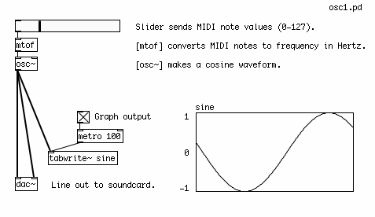
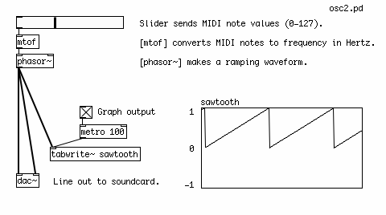

Oscillators
Oscillators are the basic signal generators in electronic music. By combining, filtering or modulating them, almost any imaginable sound can be created. In Pure Data, audio signals are represented by a stream of numbers between the values of -1 and 1. So the waveform of each oscillator has been programmed to send out values within this range.
The name of each oscillator refers to its waveform, which is the shape of one period (or one Hertz) of that oscillator. Different waveforms make different sounds.
Sine Wave Oscillator
The Sine Wave Oscillator makes a pure tone with no harmonics. The shape of the wave smoothly moves from 0 up to 1, back down through 0 to -1 and back up to 0. (Remember to turn the DSP on so that you can hear the audio).

Sawtooth Wave Oscillator
The Sawtooth Wave Oscillator sounds harsher in comparison to the Sine Wave, and it contains both odd and even harmonics of the fundamental frequency. This makes it ideal for filtering and for synthesizing string sounds. The shape of this wave ramps up sharply from "0" to "1", then immediately drops back to "0".

Square Wave Oscillator
The Square Wave Oscillator has a "hollow" sound, and contains only odd harmonics and is useful for synthesizing wind instrument as well as "heavy" bass sounds. Its shape alternates instantly between 0 and 1. Since there is no square wave object in Pd, we create a square wave by checking to see if the output of the Sawtooth Wave object [phasor~] is greater than 0.5. If it is, the Expression object [expr~] outputs a 1, otherwise it outputs a zero. This creates the "high" (1) and "low" (0) states of the square wave, as you can see in the graph.

Other Waveforms
Other possible waveforms include a triangle wave as well as many other mathematical shapes.